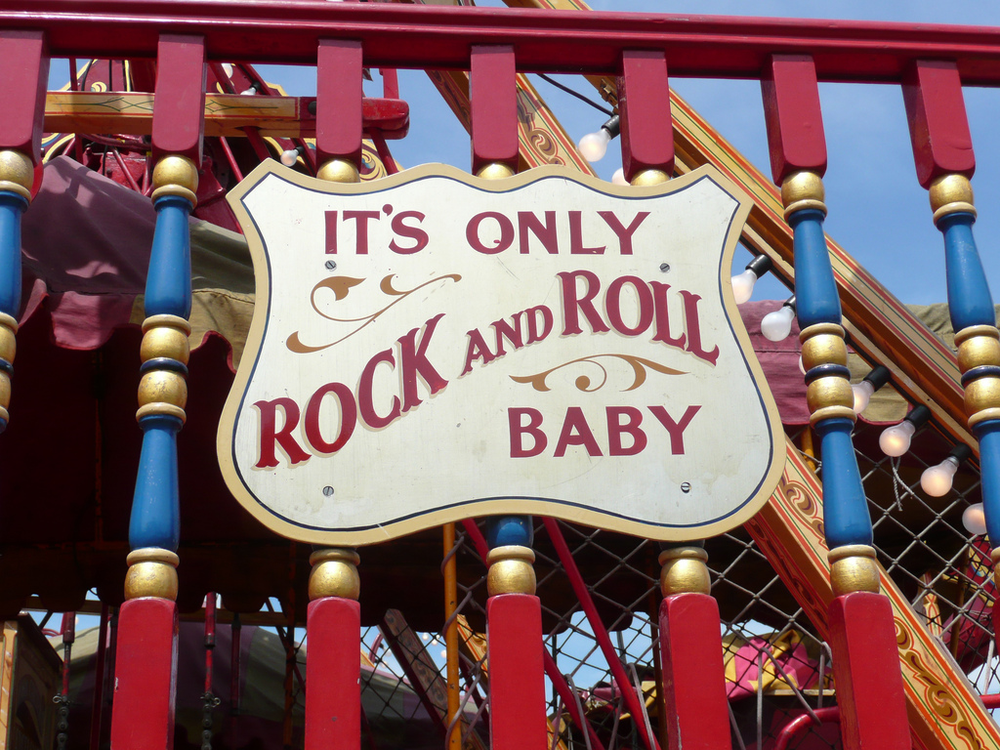
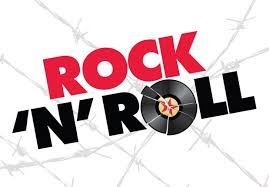

This should be a fact, classic rock is like if Gandalf was in the U.S.A. instead of the Shire,(p.s. i've always wanted to got to the Shire) or if you like pie than it shall be pie. Like Cherry Pie(that is a song by Warrant). But if your stuck in world 1, like the rest of us, and not on planet Krypton, than classic rock is something you might or might not enjoy.
Well, typically most of the time I find that classic rock is better than other music......but thats just my opinion.
Classic rock ranges from the 1960s to the 1980s, and is focused on mainley the guitar. The classic rock genre contains some of the most popular bands of time. Like the Beatles, Metallica, Queen, Kiss, Guns and Roses, Aerosmith, and more.
I made a list of some of my favorite song to give an example of some songs.
Note: Tequila is a bit Bluesish
 YouTube